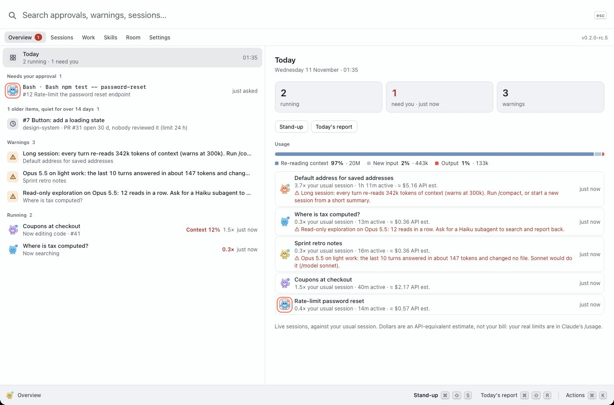
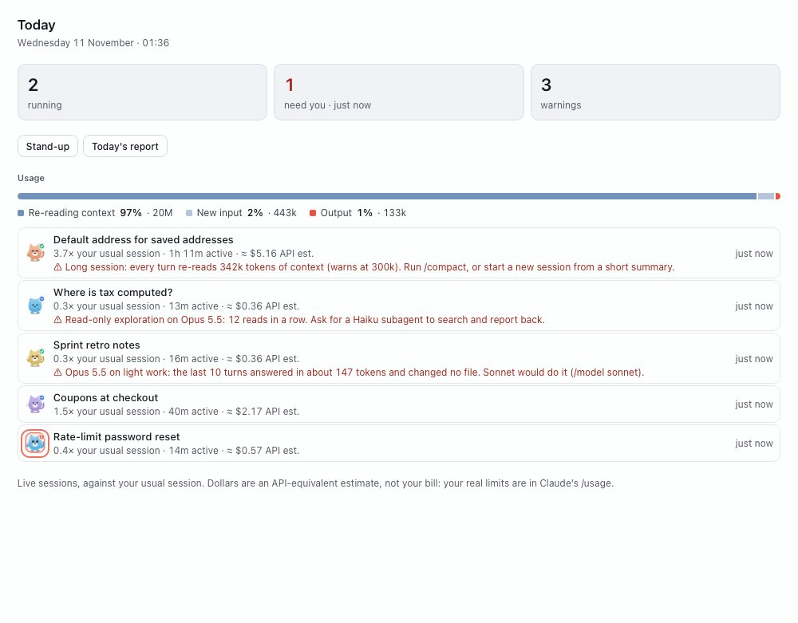
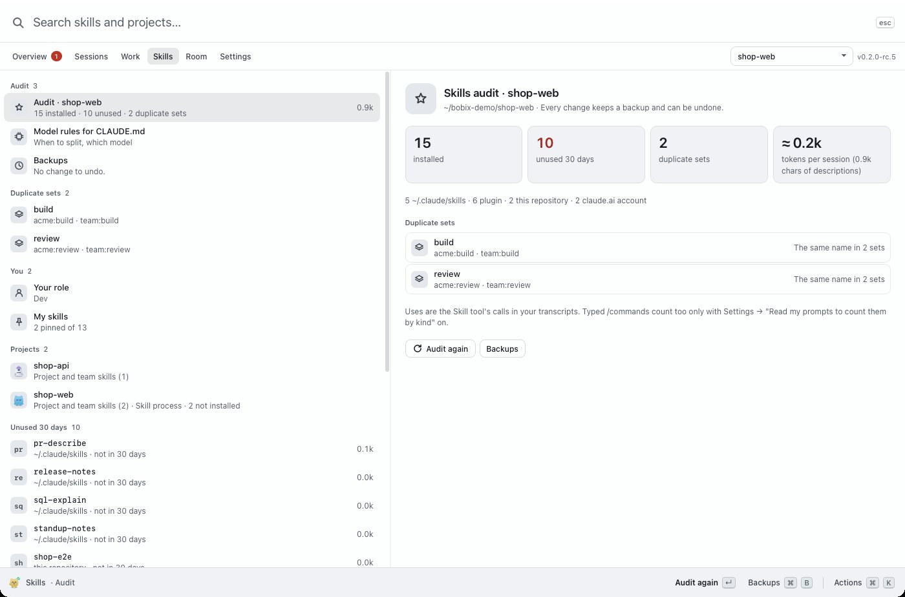

A personal assistant for working well with Claude Code
Every session.
At a glance.
Every session is a pet on your screen. Answer approvals without switching windows, see what each session uses against your normal, keep your skills lean, and run your tickets.

Pets
A pet for every session.
Each session walks along the edge of the screen you pick. One look tells you which one is busy and which one is waiting on you. Click a pet to jump into its session.
Busy with a task. Hover to see what it’s doing.
The pets at the bottom of this page are real. Drag one, flick one, or tap it.
Approvals
Answer Claude without finding the terminal.
When Claude asks for permission, answer on the pet, in the panel or on the notification (macOS). The request that has waited longest comes first, and one that deletes or overwrites data is marked. Try it: the pet at the bottom of the page is waiting for you.
npm test in demo-appFamily
Side sessions stand next to their parent.
Side sessions walk right behind the session they came from, so you can see who started what.
Projects
Five pets. One per project.
Bobix, Nota, Tty, Miso and Ship. A project’s sessions share one design, each session in a colour of its own.
Point at a pet
Its task, its context, its cost.
Hover to see what it’s doing and how much context is left. Click to open the session in the Claude app, Terminal, iTerm or VS Code.
Click to open the session ›
Stays out of your way
Or show a pet only when it needs you.
Pick the screen, the edge, the size and how visible they are. Pets fade near the cursor and let clicks through.
Usage and skills
More than a pet.
Bobix reads the transcripts Claude already writes on your computer. It tells you early when a session gets expensive, and keeps your skills in order.
Usage
Know when a session gets expensive.
Tokens, the share spent re-reading context, every model it used (subagents too) and active time, measured against your normal: “3.7× your usual session”. Dollars are an API-equivalent estimate you can hide.
- Long session. Start fresh from a short summary.
- Heavy model, light work. Try Sonnet.
- Read-only exploring. Hand it to Explore on Haiku.

Skills
A skills audit you can undo.
Per project: every skill Claude loads, what the descriptions cost every turn, unused ones and duplicate sets. Disable or remove your own skills in one click, each with a backup and an Undo.

Launcher
One window. All keyboard.
Search, then Overview, Sessions, Work, Skills, Room and Settings.
↑ ↓ move · ↵ open · ⌘K every action
Tickets
Run your tickets, too.
Your GitHub and GitLab issues, read through your own gh and glab, next to the sessions working on them.
To do
CODE-31Export settings as JSONSuggested nextCODE-34Empty state for SkillsIn progress
CODE-27Dark mode toggleCODE-29Retry failed uploadsTwo sessions on one issueIn review
CODE-22Faster searchCODE-18Login timeoutStuck: answer the reviewStand-up and today’s report come as plain text to copy. Bobix sends nothing.
Only if you want them
Habits and rooms.
Both are for when you use them, and both go through your own Claude.
Habits Off by default
Requests you repeat become skills.
Once a week, Haiku reads the prompts you typed in the last 14 days, finds what you ask for every week and drafts a skill. Only Approve and install writes it, and every version can be undone. This sends text to Anthropic, through your own Claude.
release-notesRoom Early
A war room for one problem.
Host it over your Tailscale network and invite people to chat. Your Claude sorts the chat into problem, options, pros and cons; you decide. Needs Tailscale. Not yet tried between two real machines.
- Problem
- Uploads fail on slow links
- Options
- Retry · Resumable uploads
- Decision
- Yours
Notifications
Tells you, then lets you focus.
A notification when a session needs approval or finishes, the waiting count on the menu bar or tray, and Do not disturb for 30 or 60 minutes.
Model rules
A CLAUDE.md block, shown before it’s added.
When to split, which model. Undo puts the file back byte for byte.
Updates
Updates from inside the app.
It tells you when a new version is out and asks before it installs.
Languages
English and Tiếng Việt.
Every screen, both languages.
Platforms
macOS, Windows, Linux.
One app on all three. macOS is tried by hand on every release; the others by a person on a real machine and by CI.
Footprint
Small and native.
4 MB
download, about 9 MB installed on macOS.
Install
Up and running in two minutes.
- Open the
.dmgand drag Bobix into Applications. - The build is not notarized by Apple, so the first launch is blocked: right-click the app → Open → Open, or run
xattr -cr "/Applications/Bobix.app". - Bobix lives in the menu bar, with no Dock icon.
Or from a terminal
For an Apple chip. On an Intel Mac use Bobix-mac-x64.dmg. Quit Bobix first if it is running.
curl -fL -o /tmp/Bobix.dmg https://github.com/baonguyen-agilityio/bobix/releases/latest/download/Bobix-mac-arm64.dmg
hdiutil attach -nobrowse -quiet -mountpoint /tmp/bobix-dmg /tmp/Bobix.dmg
rm -rf /Applications/Bobix.app && cp -R /tmp/bobix-dmg/Bobix.app /Applications/
hdiutil detach -quiet /tmp/bobix-dmg && xattr -cr /Applications/Bobix.app && open /Applications/Bobix.app- Run the installer. It installs for your user only, no admin rights needed.
- It is not code-signed, so SmartScreen may say “Windows protected your PC”: click More info → Run anyway.
- Bobix lives in the system tray, maybe behind the ^ arrow.
Or from a terminal
PowerShell.
$f = "$env:TEMP\Bobix-windows-x64.exe"; Invoke-WebRequest https://github.com/baonguyen-agilityio/bobix/releases/latest/download/Bobix-windows-x64.exe -OutFile $f; Start-Process $f- Install the
.deb, then open Bobix from your apps menu. - On Wayland it runs through XWayland so pets stay on top.
- To bring a terminal forward on a click, install
xdotool. Other distributions aren’t packaged yet.
Or from a terminal
For amd64. On ARM use bobix-linux-arm64.deb.
curl -fL -o /tmp/bobix.deb https://github.com/baonguyen-agilityio/bobix/releases/latest/download/bobix-linux-amd64.deb && sudo apt install -y /tmp/bobix.debThese links give the newest stable version (v0.1.3 today). Test builds of 0.2 (v0.2.0-rc.9 is the newest today), with the pets and panel on this page, are pre-releases: pick one from all releases. macOS is what each release is tried on by hand; Windows and Linux are tried by a person on a real machine and by CI, and what still fails is listed under known limits in the roadmap.
Then connect Claude Code
- Open BobixThe panel opens on Connect Claude Code the first time.
- Install hooksBobix adds its hooks to
~/.claude/settings.json, keeps your other hooks and saves a backup. - Send a promptIn any Claude Code session. Its pet appears.
Want to see the pets first? Send a test event in Settings → Connect Claude Code shows a pretend session.
Uninstall
- Settings → Connect Claude Code → Remove hooks. Only Bobix’s hooks are removed.
- Settings → turn off Start when I log in.
- Quit from the tray or menu bar icon and delete the app.
- Optional: delete
~/.claude/bobix/, the backups~/.claude/settings.json.bak-bobix-*and the settings folder (~/Library/Application Support/Bobix,%APPDATA%\Bobixor~/.config/Bobix).
Without Node.js
Hooks fall back to curl or PowerShell. Everything works except one thing: opening a session (a pet click, Open session in the panel, on the pet’s card or in the tray, ⌘K ↵) shows its details or says why instead of bringing its window forward. Install Node.js and click Reinstall in Settings → Connect Claude Code to get it back.
Trouble installing? See the install guide.
Privacy
Runs on your computer.
Stays on your computer.
- No account
- No sign-up, no analytics.
- Local only
- Hooks talk to Bobix only on 127.0.0.1, with a per-user token. A Room you host adds one port, on your Tailscale address only.
- Never the contents
- Tool name, file path or command, your prompt. Never file contents or tool output.
- You click, it changes
- Every change has a backup and an Undo.
- Network, by default
- Your issues through your own
gh/glab, and a daily check for a new version. Nothing about you is sent, and each can be turned off. - Sent to Anthropic
- Only for features you switch on or press, through your own Claude. Never your project’s source files.
- Kept
- Sessions in memory only. For finished sessions, usage numbers (never text) stay in a file you can delete.
Everything it reads, writes and runs: Privacy and security ›